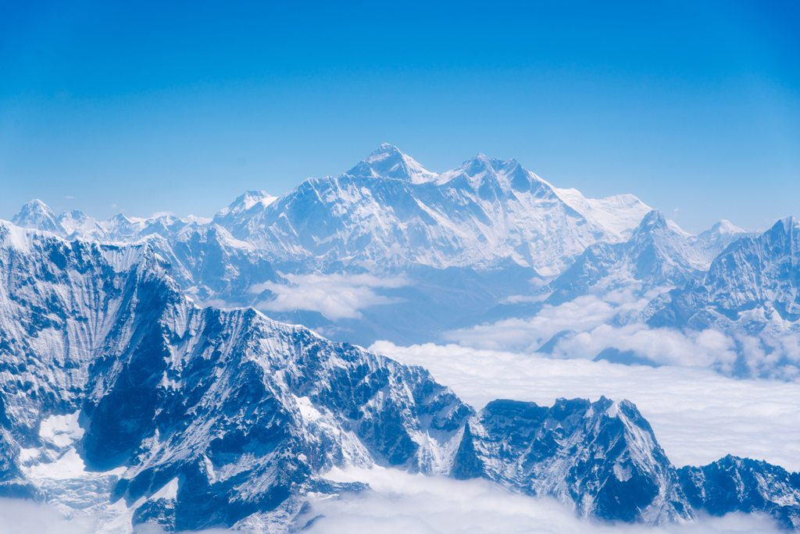

Mount Everest (8848 m n.p.m.)
Nie ma żadnych wątpliwości, że Mount Everest jest najtrudniejszą perłą Korony Ziemi. Najwyższy szczyt Azji i całego świata, mierzący 8848 m n.p.m., wznosi się dumnie w Himalajach Centralnych.
Mount Everest od zawsze wzbudzał strach i podziw wśród ludzi, o czym świadczą nazwy tej góry w językach miejscowej ludności. Po tybetańsku góra zwie się Czomolungma, czyli Bogini Matka Śniegu / Bogini Matka Ziema. Nepalska nazwa Sagarmatha oznacza natomiast Czoło Nieba.
Najwyższy szczyt Azji zdobyto po raz pierwszy 29 maja 1953 r. Do dzisiaj wyprawy na ten szczyt organizowane są głównie wiosną i jesienią, czyli przed i po monsunie, który latem wieje znad Zatoki Bengalskiej.
Mount Everest, fot. Andreas Gӓbler, Unsplash